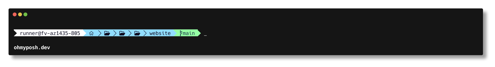
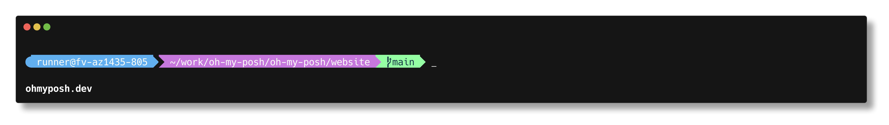
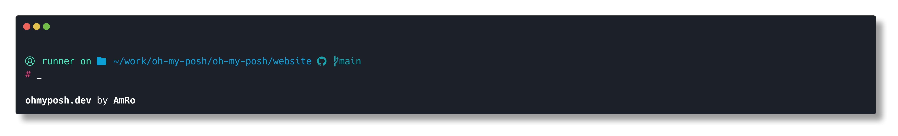
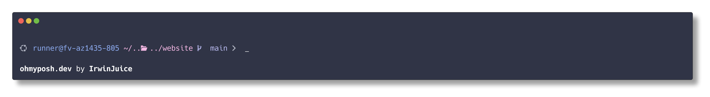

我的笔记
苟日新，日日新，又日新。
由于人的记忆力是有限的，所以我们应该记录自己常年积累的知识。
tools
日常开发环境、命令行与网络工具的安装和使用记录。
- Windows 优先使用
winget安装软件；安装后重新打开终端，使 PATH 生效。 - 涉及管理员权限的命令，请在管理员终端中执行。
- Linux 发行版的包管理器和服务管理方式不同，执行前先确认系统版本。
常用检查
Get-Command git
Get-Command docker
$env:Path -split ';'
where.exe node
命令找不到时，优先确认是否安装成功、PATH 是否已更新，以及当前终端是否在安装前就已打开。
Powershell
一.开启 powershell
-
win + R输入powershell -
管理员身份运行
Ctrl + Shift + Enter
PowerShell 升级和 Windows Terminal 配置
- 查看 PowerShell 当前版本
$PSVersionTable
- 更新 PowerShell
添加中科大镜像源
winget source add --name winget --arg https://mirrors.ustc.edu.cn/winget-source
winget search PowerShell # 查询可用的 PowerShell 包
- 安装（微软发布的 PowerShell）
winget install --id Microsoft.PowerShell --source winget
- 打开 Windows Terminal 的 settings.json 并修改配置（示例，替换为你的 GUID）
{
"defaultProfile": "{574e775e-4f2a-5b96-ac1e-a2962a402336}",
"profiles": {
"list": [
{
"guid": "{574e775e-4f2a-5b96-ac1e-a2962a402336}",
"name": "PowerShell",
"source": "Windows.Terminal.PowershellCore",
"hidden": false
}
]
}
}
二. 文件相关命令
- 进入文件夹
cd .\
- 返回上级目录
cd ..
- 创建目录 / 文件
mkdir .\NewFolder
ni .\file.txt -ItemType File
- 删除文件或目录
rm .\file.txt
- 移动 / 重命名
mv .\source.txt .\dest.txt
- 使用 VS Code 打开当前目录
code .
- 清空回收站（无提示）
Clear-RecycleBin -Force -Confirm:$false
三. 常用命令
环境变量
- 显示环境变量
gci env:
- 设置（追加）环境变量路径
$env:Path += ";C:\你的\路径"
网络配置
- 显示本机 IP
ipconfig
- 测试网络连通性
ping <IP 或 主机名>
- 关闭防火墙（谨慎）
netsh advfirewall set allprofiles state off
- 显示网络统计信息
netstat -an
- 显示本地路由表
route print
- 显示/查询防火墙规则
Get-NetFirewallRule
winget
window提供的包管理工具，类似于apt-get、yum等。
更新
- 查看winget源
winget source list
- 更新源
winget source update
- 更新软件
winget upgrade --all
常用软件
- vscode
winget install Microsoft.VisualStudioCode -s winget
- git
winget install Git.Git -s winget
- chrome
winget install Google.Chrome -s winget
- 7zip
winget install 7zip.7zip -s winget
- JLC EDA Pro
winget install JLC.LCEDA.Pro -s winget
- arduino
winget install ArduinoSA.IDE.stable -s winget
- bandizip
winget install Bandisoft.Bandizip -s winget
- draw.io
winget install JGraph.Draw io.Desktop -s winget
- obs-studio
winget install OBSProject.OBSStudio -s winget
- telegram
winget install Telegram.TelegramDesktop -s winget
- nano
winget install okibcn.nano -s winget
- vim
winget install vim.vim -s winget
- wireguard
winget install WireGuard.WireGuard -s winget
winget install Tencent.QQ -s winget
winget install Tencent.WeChat -s winget
Oh my posh
PowerShell 提示符美化工具。
安装和更新
安装
winget install JanDeDobbeleer.OhMyPosh -s winget
检查版本
oh-my-posh version
通过 winget 安装后，通常不需要手动追加
Path。
更新
winget upgrade JanDeDobbeleer.OhMyPosh -s winget
主题配置（推荐：落地到本地文件）
下面以 aliens 为例，执行一次即可：
$themeDir = Join-Path $HOME "Documents\PowerShell\themes"
New-Item -ItemType Directory -Force -Path $themeDir | Out-Null
$themeFile = Join-Path $themeDir "aliens.omp.json"
Invoke-WebRequest `
-Uri "https://raw.githubusercontent.com/JanDeDobbeleer/oh-my-posh/main/themes/aliens.omp.json" `
-OutFile $themeFile
在 $PROFILE 中加入：
$ompTheme = Join-Path $HOME "Documents\PowerShell\themes\aliens.omp.json"
if (Test-Path $ompTheme) {
$ompShell = if ($PSVersionTable.PSEdition -eq "Core") { "pwsh" } else { "powershell" }
oh-my-posh init $ompShell --config $ompTheme | Invoke-Expression
}
立即生效：
. $PROFILE
主题配置（不落地文件，直接用 URL）
如果你不想下载主题文件，也可以直接用远程配置：
oh-my-posh init pwsh --config "https://raw.githubusercontent.com/JanDeDobbeleer/oh-my-posh/main/themes/agnosterplus.omp.json" | Invoke-Expression
注意事项
- 某些环境下
$env:POSH_THEMES_PATH为空，不建议直接依赖它拼接主题路径。 - 图标显示异常（方块/问号）时，先安装 Nerd Font：
oh-my-posh font install Meslo --headless
- 安装字体后，确保终端字体已切换到 Nerd Font（例如
MesloLGLDZ Nerd Font）：
- Windows Terminal:
settings.json中设置profiles.defaults.font.face - VS Code:
settings.json中设置terminal.integrated.fontFamily
- 如果使用 Windows PowerShell 遇到
running scripts is disabled on this system，建议切换到 PowerShell 7 (pwsh) 作为默认终端。
主题列表
- agnosterplus

- aliens

- amro

- catppuccin

Git
一.安装 Git
-
官网下载 下载
-
Windows下载
winget install --id Git.Git -e --source winget
- Linux 下载
sudo apt-get install git # Debian/Ubuntu
sudo yum install git # CentOS/RHEL
二.配置 Git
在 powershell 中输入git检测是否配置完成
配置用户
- 初始化 Git 仓库
git init
- 设置用户名和邮箱
git config user.name 'ptsfdtz'
git config user.email 'pitousanfadetuzi@gmail.com'
- 查看邮箱用户配置
git config --list
- 配置 git
进入 gitconfig 文件
code ~/.gitconfig # vscode
添加以下内容
[user]
name=ptsfdtz
email=pitousanfadetuzi@gmail.com
[http]
proxy=http://127.0.0.1:7890
[https]
proxy=http://127.0.0.1:7890
[init]
defaultBranch=main
[pull]
ff=only
令 git 使用 clash 代理
三.初次提交模板
- 项目初始化
git init
echo "# README" > README.md
git add README.md
git commit -m "First commit"
- 添加远程仓库链接
git remote add origin #仓库链接
- 默认分支 main
git branch -M main
- 提交到 github 仓库
git push -f -u origin main
四.常用命令
- 查看当前状态
git status
- 查看提交记录
git log
- 回退到上一个版本
git reset --hard HEAD^
- 回退到上上个版本
git reset --hard HEAD^^
- 回退到指定版本
git reset --hard HEAD^^
- 分支相关的操作
git branch ##查看分支
git branch <name> ##创建分支
git checkout <name> ##切换分支
git checkout -b <name> ##创建+切换分支
git merge <name> ##合并某分支到当前分支
git merge --no-ff -m "..." <name> ##使用普通模式合并分支，可以显示合并历史
git branch (-m | -M) <oldbranch> <newbranch> ##重命名分支
git branch -d <name> ##删除分支
git branch -D <name> ##强行删除未合并分支
git log --graph ##查看分支合并图
git log --graph --pretty=oneline --abbrev-commit ##也可以查看分支合并图
git tag <num> ##创建标签
git push --tags ##推送标签
docker
安装与验证
Windows 推荐安装 Docker Desktop，并启用 WSL 2 后端。安装完成后执行：
docker version
docker run --rm hello-world
常用命令
docker ps -a
docker images
docker pull nginx:alpine
docker run -d -p 8080:80 --name web nginx:alpine
docker logs -f web
docker exec -it web sh
docker stop web
docker rm web
Compose
在含有 compose.yaml 的目录中运行：
docker compose up -d
docker compose ps
docker compose logs -f
docker compose down
不要把密码、令牌写入镜像或提交到仓库；通过 .env、密钥管理服务或 CI 环境变量注入。
镜像构建
创建 Dockerfile：
FROM nginx:alpine
COPY ./dist /usr/share/nginx/html
EXPOSE 80
构建和运行：
docker build -t my-site:latest .
docker run --rm -p 8080:80 my-site:latest
数据卷和清理
docker volume create mysql-data
docker run -d --name mysql -v mysql-data:/var/lib/mysql mysql:8
docker system df
docker image prune
经验总结
docker ps只显示运行中的容器，排查退出的容器使用docker ps -a。- 容器内的数据默认随容器删除，数据库等数据必须挂载 volume。
- 镜像构建上下文不要包含
node_modules、密钥和构建产物，使用.dockerignore排除。
wireguard
一.安装 wireguard
在服务端安装
- 获取 root 权限
sudo i
- 安装 wireguard 软件
apt install wireguard resolvconf -y
- 开启ip转发
echo "net.ipv4.ip_forward = 1" >> /etc/sysctl.conf
sysctl -p
二.配置服务端
配置服务端公钥和私钥
- 进入配置存储目录，调整目录权限
sudo su #切换到root用户
cd /etc/wireguard/
umask 077 #调整目录默认权限
- 生成服务器密钥
wg genkey > server.key #生成私钥
wg pubkey < server.key > server.key.pub #通过私钥生成公钥
- 生成客户端密钥(client1)
wg genkey > client1.key #生成私钥
wg pubkey < client1.key > client1.key.pub #通过私钥生成公钥
显示所有生成的密钥
cat server.key && cat server.key.pub && cat client1.key && cat client1.key.pub
创建服务器配置文件
nano /etc/wireguard/wg0.conf
添加服务器配置文件内容
[Interface]
PrivateKey = $(cat server.key) # 填写本机的privatekey 内容
Address = 10.0.8.1 #本机虚拟局域网IP
PostUp = iptables -A FORWARD -i wg0 -j ACCEPT; iptables -A FORWARD -o wg0 -j ACCEPT; iptables -t nat -A POSTROUTING -o eth0 -j MASQUERADE
PostDown = iptables -D FORWARD -i wg0 -j ACCEPT; iptables -D FORWARD -o wg0 -j ACCEPT; iptables -t nat -D POSTROUTING -o eth0 -j MASQUERADE
#注意eth0需要为本机网卡名称
ListenPort = 50814 # 监听端口
DNS = 8.8.8.8
[Peer]
PublicKey = $(cat client1.key.pub) #自动client1的公钥
AllowedIPs = 10.0.8.10/32 #客户端所使用的IP" > wg0.conf
查看你的默认网卡
ip route list table main default
如果网卡不正确更改默认网卡 将 eth0 改为enp4s0
启动服务
wg-quick up wg0 #启动wg0
wg-quick down wg0 #关闭wg0
配置客户端
- 下载客户端
下载链接：https://www.wireguard.com/install/
- 配置客户端
新建隧道
- 配置隧道
[Interface]
PrivateKey = 6M8HEZioew+vR3i53sPc64Vg40YsuMzh4vI1Lkc88Xo= #此处为client1的私钥
Address = 10.0.8.10 #此处为peer规定的客户端IP
MTU = 1500
[Peer]
PublicKey = Tt5WEa0Vycf4F+TTjR2TAHDfa2onhh+tY8YOIT3cKjI= #此处为server的公钥
AllowedIPs = 10.0.8.0/24 #此处为允许的服务器IP
Endpoint = 114.132.56.178:50814 #服务器对端IP+端口
配置防火墙
允许端口转发
- 进入配置文件
sudo vim /etc/sysctl.conf
- 编辑内容
net.ipv4.ip_forward=1
- 重启防火墙
sudo sysctl -p
重启防火墙
- 查看防火墙是否启动成功
sudo ufw status
- 如果防火墙未启动，则启动防火墙
ufw allow 51820/udp
查看是否连接成功
客户端
ping 10.0.8.1
服务器
sudo tcpdump -envi wg0
设置服务器开机启动wireguard
systemctl enable wg-quick@wg0
参考
nano
一. linux安装
sudo apt update && sudo apt install nano -y # Debian/Ubuntu系统
sudo yum install nano -y # CentOS/RHEL系统
sudo dnf install nano -y # Fedora系统
二. Windows安装
winget install --id Nano.Nano -e --source winget
三. 配置
nano ~/.nanorc
添加以下内容
set linenumbers
set mouse
set autoindent
set softwrap
include "/usr/share/nano/*.nanorc"
四. 使用
nano 文件名
# 保存文件: Ctrl + O
# 退出 nano: Ctrl + X
# 查找文本: Ctrl + W
# 剪切文本: Ctrl + K
# 粘贴文本: Ctrl + U
# 撤销操作: Alt + U
# 重做操作: Alt + E
vim
基本模式
- 普通模式：移动光标和执行命令，按
Esc返回。 - 插入模式：按
i在光标前输入，a在光标后输入。 - 命令行模式：普通模式下按
:。
常用操作
i / a 进入插入模式
:w 保存
:q 退出
:wq 或 ZZ 保存并退出
:q! 放弃修改并退出
dd 删除当前行
yy 复制当前行
p 粘贴
u 撤销
/文本 搜索；n 跳到下一个结果
可通过 vimtutor 打开内置教程，先完成教程再逐步引入插件和个人配置。
移动和编辑
h j k l 左 下 上 右
gg / G 跳到文件开头 / 结尾
0 / $ 跳到行首 / 行尾
dw 删除一个单词
cw 修改一个单词
v / V 选中字符 / 整行
> / < 缩进 / 反缩进
查找和替换
:set number 显示行号
:set paste 粘贴前启用，完成后 :set nopaste
:%s/old/new/g 全文替换
:%s/old/new/gc 全文替换并逐项确认
:e 文件名 打开文件
经验总结
- 先练习
Esc、移动、删除、搜索和保存，效率提升最明显。 - 修改前使用
:set number显示行号，排查日志和代码更方便。 - 不确定替换范围时使用
c确认标志，避免误改全文件。
languages
本节记录常用编程语言的安装、项目初始化和日常开发命令。
每个项目应固定运行时与依赖版本，并在 README 或版本管理文件中说明。升级工具链前先确认依赖兼容性，再在 CI 中验证构建与测试。
nodejs
安装NVM
windows下推荐使用nvm-windows
Linux和macOS下推荐使用nvm
使用NVM安装Node.js
nvm install <version>
nvm use <version>
全局安装包
npm install -g <package-name>
- pnpm:
npm install -g pnpm
- yarn:
npm install -g yarn
- typescript:
npm install -g typescript
- ts-node:
npm install -g ts-node
go
安装 Go（Windows）
推荐优先使用 winget 安装：
winget install --id GoLang.Go --source winget --accept-source-agreements --accept-package-agreements
也可以使用官方安装包：
验证安装
go version
go env GOROOT
go env GOPATH
如果命令找不到，先重开终端再试一次。
模块和项目初始化
创建第一个项目
mkdir hello-go
cd hello-go
go mod init hello-go
创建 main.go：
package main
import "fmt"
func main() {
fmt.Println("hello go")
}
运行项目：
go run .
常用命令
go mod tidy
go fmt ./...
go test ./...
go build ./...
常用配置
配置国内代理（可选）
go env -w GOPROXY=https://goproxy.cn,direct
go env -w GOSUMDB=sum.golang.google.cn
查看当前配置：
go env GOPROXY
go env GOSUMDB
恢复默认：
go env -u GOPROXY
go env -u GOSUMDB
经验总结
go install <module>@latest安装的可执行文件默认在GOPATH\bin。- 如果安装了工具但命令不可用，先确认
GOPATH\bin是否在Path中。 go mod tidy建议作为日常命令，能及时清理和补齐依赖。go test ./...可以快速覆盖整个项目包的基础回归。
python
安装 Python（Windows）
推荐使用 winget 安装官方版本：
winget install --id Python.Python.3.14 --source winget --accept-source-agreements --accept-package-agreements --override "InstallAllUsers=0 PrependPath=1 Include_launcher=1 Include_pip=1"
说明：
PrependPath=1会把 Python 和 Scripts 目录加入Path。Include_launcher=1会安装py启动器。Include_pip=1会安装pip。
验证安装
python --version
pip --version
py --version
如果当前终端提示找不到命令，先重开终端再试。
虚拟环境
创建虚拟环境：
python -m venv .venv
激活虚拟环境（PowerShell）：
.\.venv\Scripts\Activate.ps1
退出虚拟环境：
deactivate
常用命令
升级 pip：
python -m pip install --upgrade pip
安装依赖：
pip install <package-name>
导出依赖：
pip freeze > requirements.txt
按依赖文件安装：
pip install -r requirements.txt
经验总结
- 本机实测通过
winget安装后，python.exe、pip.exe、py.exe都已安装在用户目录下：C:\Users\16526\AppData\Local\Programs\Python\Python314\ - 用户级
Path虽然已更新，但当前已打开的终端会话不会自动刷新，重开终端后命令才会直接可用。 - 如果执行
python仍跳转到 Microsoft Store，需要在系统设置中关闭 App Execution Aliases 里的python.exe/python3.exe。 - 验收建议至少检查三项：
python --version、pip --version、py --version。
rust
安装 Rust（Windows）
推荐使用 rustup，方便后续切换工具链和升级。
winget install --id Rustlang.Rustup --source winget --accept-source-agreements --accept-package-agreements
验证安装
rustup --version
rustc --version
cargo --version
如果命令找不到，先重开终端再试一次。
常用命令
更新工具链
rustup update
查看已安装工具链
rustup toolchain list
设置默认工具链
rustup default stable
创建并运行第一个项目
cargo new hello-rust
cd hello-rust
cargo run
经验总结
winget安装Rustlang.Rustup后，~\.cargo\bin会放置rustup/rustc/cargo。- 用户级
Path即使已经包含~\.cargo\bin，当前终端会话也可能还不可见。 - 最稳妥做法是重开终端；如果想每次启动都兜底，可在 PowerShell profile 中补一段：
$cargoBin = Join-Path $HOME ".cargo\bin"
if ((Test-Path $cargoBin) -and -not (($env:Path -split ';') -contains $cargoBin)) {
$env:Path = "$cargoBin;$env:Path"
}
- 验收不要只看
rustup，至少同时确认rustc和cargo版本。
C/C++
Windows 开发环境
可安装 Visual Studio Build Tools，并勾选“使用 C++ 的桌面开发”；或使用 MSYS2/MinGW。验证编译器：
cl
g++ --version
CMake 项目
cmake -S . -B build
cmake --build build --config Debug
ctest --test-dir build -C Debug
将编译器选项、依赖和目标定义写入 CMakeLists.txt，不要依赖本机 IDE 的隐式配置。开启警告并尽可能在开发阶段将警告视为错误。
最小 CMake 项目
创建 CMakeLists.txt：
cmake_minimum_required(VERSION 3.20)
project(hello LANGUAGES CXX)
set(CMAKE_CXX_STANDARD 20)
add_executable(hello main.cpp)
创建 main.cpp：
#include <iostream>
int main() {
std::cout << "hello c++\n";
}
常用命令
cmake -S . -B build -DCMAKE_BUILD_TYPE=Debug
cmake --build build
cmake --build build --config Release
经验总结
- 不要提交
build目录，构建产物应由 CMake 重新生成。 - Windows 下 MSVC 是多配置生成器，
--config Debug或Release不能省略。 - 使用 sanitizers、静态分析和单元测试尽早发现内存与未定义行为问题。
devops
DevOps 章节记录持续交付、容器编排、反向代理、监控与可观测性相关实践。
任何上线变更都应具备可回滚方案、健康检查和可观测的日志或指标；先在测试环境验证，再推广到生产环境。
ci_cd
CI 用于在每次提交时自动构建、测试和检查代码；CD 用于将已验证的构建产物发布到目标环境。
最小流程
- 拉取代码并安装锁定版本的依赖。
- 执行格式检查、静态检查和测试。
- 构建不可变产物，例如 Docker 镜像，并以提交 SHA 标记。
- 发布前执行健康检查；失败时停止推广或回滚。
令牌、部署密钥等敏感信息仅放在 CI 的 Secret 中。缓存依赖时，缓存键应包含锁文件的哈希。
GitHub Actions 例子
name: CI
on: [push, pull_request]
jobs:
test:
runs-on: ubuntu-latest
steps:
- uses: actions/checkout@v4
- uses: actions/setup-node@v4
with:
node-version: 20
cache: npm
- run: npm ci
- run: npm run lint
- run: npm test
- run: npm run build
经验总结
- 安装依赖优先使用
npm ci、pnpm install --frozen-lockfile等锁文件模式。 - 部署步骤应只运行在受保护分支或经审批的环境中。
- 构建产物和测试报告可作为 artifact 保存，便于排查失败任务。
kubernetes
Kubernetes 使用声明式资源管理容器化工作负载。常用对象包括 Deployment、Service、ConfigMap、Secret 和 Ingress。
kubectl get pods -A
kubectl apply -f deployment.yaml
kubectl rollout status deployment/api
kubectl logs deployment/api -f
kubectl rollout undo deployment/api
工作负载应配置资源请求与限制、存活/就绪探针和滚动更新策略。Secret 只适合传递敏感配置，不等同于加密的长期密钥库。
Deployment 例子
apiVersion: apps/v1
kind: Deployment
metadata:
name: api
spec:
replicas: 2
selector:
matchLabels:
app: api
template:
metadata:
labels:
app: api
spec:
containers:
- name: api
image: example/api:1.0.0
ports:
- containerPort: 8080
readinessProbe:
httpGet: { path: /health, port: 8080 }
常用排查
kubectl describe pod <pod-name>
kubectl get events --sort-by=.lastTimestamp
kubectl exec -it <pod-name> -- sh
kubectl port-forward service/api 8080:80
经验总结
- 镜像使用明确版本或提交 SHA，不使用不确定的
latest。 - readiness probe 失败时不会接收流量，适合保护尚未启动完成的服务。
- 使用 namespace 区分环境，并在执行命令前确认当前 context。
nginx
常用反向代理配置
server {
listen 80;
server_name example.com;
location / {
proxy_pass http://127.0.0.1:8080;
proxy_set_header Host $host;
proxy_set_header X-Real-IP $remote_addr;
proxy_set_header X-Forwarded-For $proxy_add_x_forwarded_for;
proxy_set_header X-Forwarded-Proto $scheme;
}
}
修改配置后先检查再重载：
sudo nginx -t
sudo systemctl reload nginx
HTTPS 证书应使用自动续期机制；不要把私钥放入仓库。
静态文件部署
server {
listen 80;
server_name example.com;
root /var/www/site;
index index.html;
location / {
try_files $uri $uri/ /index.html;
}
}
常用命令
sudo systemctl status nginx
sudo tail -f /var/log/nginx/access.log
sudo tail -f /var/log/nginx/error.log
sudo nginx -s reload
经验总结
- 每次修改先执行
nginx -t，配置错误时不要直接 reload。 - SPA 部署需要
try_files回退到index.html，否则刷新子路由会 404。 - 代理 WebSocket 时需额外设置
Upgrade和Connection请求头。
prometheus
Prometheus 按固定间隔抓取目标暴露的指标，并使用 PromQL 查询时序数据。
指标原则
- Counter 只增不减，适合请求总数和错误总数。
- Gauge 可升可降，适合队列长度和当前连接数。
- Histogram 适合记录延迟和响应大小分布。
示例查询：
sum(rate(http_requests_total[5m])) by (status)
histogram_quantile(0.95, sum(rate(http_request_duration_seconds_bucket[5m])) by (le))
避免将用户 ID、请求 ID 等高基数字段设为标签。
配置抓取目标
scrape_configs:
- job_name: api
metrics_path: /metrics
static_configs:
- targets: ["api:8080"]
常用查询
up
sum(rate(http_requests_total{status=~"5.."}[5m]))
max_over_time(process_resident_memory_bytes[1h])
经验总结
- 每个服务都应暴露健康状态、请求量、错误量和延迟指标。
- 告警表达式应保留一定持续时间，避免短暂抖动触发通知。
- 指标名称应包含单位，例如
_seconds、_bytes、_total。
grafana
Grafana 用于展示 Prometheus、Loki 等数据源中的指标与日志。
创建仪表盘时，优先围绕服务目标组织面板：吞吐量、错误率、延迟和资源饱和度。告警应给出明确阈值、持续时间、负责人和排查链接，避免针对瞬时波动频繁通知。
配置数据源
- 登录 Grafana，进入
Connections->Data sources。 - 选择 Prometheus，填写地址，例如
http://prometheus:9090。 - 点击
Save & test，确认连接成功。
面板例子
sum(rate(http_requests_total[5m])) by (job)
时间序列面板适合观察趋势；Stat 面板适合显示当前值；Table 面板适合列出实例和标签。面板标题应写清指标含义和单位。
经验总结
- 仪表盘变量可按环境、服务和实例筛选，减少复制面板。
- 使用 provisioning 或导出 JSON 管理重要仪表盘，避免只保存在单个账号中。
- 告警通知附上仪表盘链接和 runbook，方便接收人快速定位。
frontend
前端负责将产品功能以可访问、可维护的界面交付给用户。
开始项目时优先确定 Node.js 版本、包管理器和代码规范。组件应有清晰的输入、状态和错误态，并兼顾键盘操作与小屏幕布局。
react
pnpm 和 vite 创建
pnpm create vite my-react-app --template react
cd my-react-app
pnpm install
pnpm run dev
github workflow
name: Deploy to GitHub Pages
on:
push:
branches: ["main"]
workflow_dispatch:
permissions:
contents: write
concurrency:
group: "pages"
cancel-in-progress: false
jobs:
build-and-deploy:
runs-on: ubuntu-latest
steps:
- name: Checkout
uses: actions/checkout@v4
- name: Setup pnpm
uses: pnpm/action-setup@v4
with:
version: latest
- name: Setup Node.js
uses: actions/setup-node@v4
with:
node-version: "20"
cache: "pnpm"
- name: Install dependencies
run: pnpm install
- name: Build
run: pnpm build
env:
BASE_URL: /${{ github.event.repository.name }}/
- name: Deploy to GitHub Pages
uses: peaceiris/actions-gh-pages@v4
with:
github_token: ${{ secrets.GITHUB_TOKEN }}
publish_dir: ./dist
user_name: "github-actions[bot]"
user_email: "github-actions[bot]@users.noreply.github.com"
vue
创建项目
pnpm create vue@latest
cd <项目名>
pnpm install
pnpm dev
单文件组件使用 <script setup>、<template> 和 <style> 组织。将可复用逻辑提取为 composable，跨页面状态使用 Pinia 等状态库，而不是在组件间层层传递。
组件例子
<script setup>
import { ref } from 'vue'
const count = ref(0)
</script>
<template>
<button @click="count++">count: {{ count }}</button>
</template>
常用命令
pnpm dev
pnpm build
pnpm lint
pnpm add vue-router pinia
经验总结
- 模板中不要写复杂业务计算，使用
computed保持模板可读。 - 列表渲染必须提供稳定的
:key，不要直接使用会变化的数组下标。 - API 请求要处理加载、失败和空数据状态。
nextjs
pnpm 创建
pnpm create next-app my-nextjs-app
cd my-nextjs-app
pnpm install
pnpm run dev
github workflow
name: Deploy Next.js 16 to GitHub Pages
on:
push:
branches: ["main"]
workflow_dispatch:
permissions:
contents: write
concurrency:
group: "pages"
cancel-in-progress: false
jobs:
build-and-deploy:
runs-on: ubuntu-latest
steps:
- name: Checkout
uses: actions/checkout@v4
- name: Setup pnpm
uses: pnpm/action-setup@v4
with:
version: latest
- name: Setup Node.js
uses: actions/setup-node@v4
with:
node-version: "20"
cache: "pnpm"
- name: Install dependencies
run: pnpm install
- name: Build (Next.js static export)
run: pnpm build
env:
NEXT_PUBLIC_BASE_PATH: /${{ github.event.repository.name }}
- name: Deploy to GitHub Pages
uses: peaceiris/actions-gh-pages@v4
with:
github_token: ${{ secrets.GITHUB_TOKEN }}
publish_dir: ./out
user_name: "github-actions[bot]"
user_email: "github-actions[bot]@users.noreply.github.com"
svelte
创建项目
npx sv create my-app
cd my-app
npm install
npm run dev
Svelte 组件将状态、模板和样式放在同一文件中。派生值应保持可计算，异步请求应处理加载、空数据和失败状态；路由项目可使用 SvelteKit 的 load 函数在页面层获取数据。
组件例子
<script>
let count = 0;
</script>
<button on:click={() => count += 1}>
count: {count}
</button>
常用命令
npm run dev
npm run check
npm run build
npm run preview
经验总结
- 页面级数据获取优先放在路由层，组件更容易复用和测试。
- 表单提交时禁用重复提交，并把服务端校验错误显示给用户。
- 发布前运行
npm run check，可发现类型和 Svelte 模板问题。
vite
Vite 提供快速的本地开发服务器和生产构建。
pnpm create vite
cd <项目名>
pnpm install
pnpm dev
pnpm build
pnpm preview
客户端可读取的环境变量必须以 VITE_ 开头。不要在前端环境变量中放置私钥或服务端令牌，构建后的值对用户可见。
环境变量
创建 .env.local：
VITE_API_BASE_URL=http://localhost:8080
在代码中读取：
const apiBaseUrl = import.meta.env.VITE_API_BASE_URL
常用配置
import { defineConfig } from 'vite'
export default defineConfig({
server: { port: 5173 },
})
经验总结
- 修改
.env后需要重启开发服务器。 - 静态资源放在
public时会原样复制，需由构建工具处理的资源放在src。 - 发布前执行
pnpm build，不要只依赖开发服务器中的表现。
tailwindcss
Tailwind CSS 通过原子类组合样式。优先复用项目的颜色、间距和字体 token，避免同类元素散落大量不一致的任意值。
<button class="rounded bg-blue-600 px-4 py-2 text-white hover:bg-blue-700">
保存
</button>
复杂组件可抽取为框架组件或使用 @apply 定义少量语义化样式；响应式前缀如 md: 应基于内容布局需求使用，而不是设备品牌。
常用写法
<div class="mx-auto grid max-w-6xl gap-4 p-4 md:grid-cols-2">
<input class="w-full border border-slate-300 px-3 py-2 focus:outline-none focus:ring-2" />
</div>
状态和响应式前缀
<button class="bg-slate-900 text-white hover:bg-slate-700 disabled:opacity-50 md:px-6">
提交
</button>
经验总结
- 颜色和间距保持使用同一组 token，页面观感更统一。
- 类名过长时先抽组件；不要为了缩短类名过度使用
@apply。 - 使用 Prettier 的 Tailwind 插件自动排序类名，减少无意义的 diff。
typescript
创建项目
Vite 创建 React + TypeScript 项目：
pnpm create vite my-app --template react-ts
cd my-app
pnpm install
pnpm dev
已有 JavaScript 项目安装 TypeScript：
pnpm add -D typescript @types/node
npx tsc --init
常用类型
type User = {
id: string
name: string
email?: string
}
function getUserName(user: User): string {
return user.name
}
接口返回数据可先定义类型：
type ApiResponse<T> = {
data: T
message: string
}
const response: ApiResponse<User> = await fetch('/api/user').then((r) => r.json())
常用命令
npx tsc --noEmit
npx tsc --init
经验总结
strict建议保持开启，避免null、undefined和隐式any问题进入运行时。- API 数据不能只依赖 TypeScript 类型，外部输入仍需在运行时校验。
- 优先使用明确的对象类型和联合类型，不要为了省事大量使用
any。
backend
后端服务负责 API、业务逻辑、认证、数据访问与异步任务。
新服务建议先明确接口契约、错误格式、日志字段和配置来源；本地环境使用 .env.example 说明必要变量，但不要提交真实密钥。
gin
创建项目
mkdir gin-demo
cd gin-demo
go mod init example.com/gin-demo
go get github.com/gin-gonic/gin
最小服务
package main
import "github.com/gin-gonic/gin"
func main() {
r := gin.Default()
r.GET("/health", func(c *gin.Context) {
c.JSON(200, gin.H{"status": "ok"})
})
r.Run(":8080")
}
运行 go run . 后访问 http://localhost:8080/health。生产环境应设置可信代理、校验输入、统一错误响应，并使用环境变量配置端口和数据库连接。
常用路由
r.GET("/users/:id", func(c *gin.Context) {
c.JSON(200, gin.H{"id": c.Param("id")})
})
r.POST("/users", func(c *gin.Context) {
var input struct {
Name string `json:"name" binding:"required"`
}
if err := c.ShouldBindJSON(&input); err != nil {
c.JSON(400, gin.H{"error": err.Error()})
return
}
c.JSON(201, input)
})
中间件
r.Use(gin.Logger(), gin.Recovery())
gin.Recovery() 可以防止 panic 直接终止进程。认证、跨域、请求日志等逻辑也适合放在中间件中；不要在中间件里吞掉错误。
经验总结
- 使用
ShouldBindJSON校验输入，不要直接信任请求体。 - 路由处理函数保持轻量，业务逻辑和数据访问放到独立包中。
- 启动时通过环境变量读取
GIN_MODE、端口和连接串，生产环境设置GIN_MODE=release。
fastapi
安装与运行
python -m venv .venv
.\.venv\Scripts\Activate.ps1
pip install fastapi "uvicorn[standard]"
from fastapi import FastAPI
app = FastAPI()
@app.get("/health")
def health():
return {"status": "ok"}
保存为 main.py 后执行 uvicorn main:app --reload。开发时可访问 /docs 查看 OpenAPI 文档。请求体应使用 Pydantic 模型校验，配置和密钥从环境变量读取。
请求模型
from pydantic import BaseModel
class UserCreate(BaseModel):
name: str
email: str
@app.post("/users", status_code=201)
def create_user(user: UserCreate):
return user
常用命令
uvicorn main:app --reload --port 8000
uvicorn main:app --host 0.0.0.0 --port 8000
pip freeze > requirements.txt
pip install -r requirements.txt
经验总结
--reload只用于本地开发，生产环境使用进程管理器和多个 worker。- 使用
HTTPException返回明确的 HTTP 错误码，不要把 Python 异常原样返回给客户端。 - 通过依赖注入管理数据库会话和认证信息，确保请求结束后释放连接。
desktop
桌面应用将 Web 或原生界面与操作系统能力结合。需要明确渲染进程与主进程的权限边界，默认不向页面暴露文件系统、命令执行等高权限能力。
electron
创建应用
npx create-electron-app@latest my-app
cd my-app
npm start
Electron 由主进程创建窗口，渲染进程显示界面。启用 contextIsolation，关闭不必要的 nodeIntegration，只通过 preload 中定义的最小 IPC API 暴露受控能力。所有 IPC 入参都应校验。
最小窗口
const { app, BrowserWindow } = require('electron')
app.whenReady().then(() => {
const win = new BrowserWindow({
width: 1000,
height: 700,
webPreferences: { contextIsolation: true, nodeIntegration: false },
})
win.loadURL('http://localhost:5173')
})
常用命令
npm start
npm run make
npm run publish
经验总结
- 主进程负责窗口和系统能力，渲染进程只负责界面。
- 不加载不可信网页；加载外部页面时必须重新审视权限配置。
- 打包前在干净环境测试自动更新、文件权限和 Windows 签名。
tauri
Tauri 使用系统 WebView 渲染前端，并由 Rust 提供原生能力。
npm create tauri-app@latest
cd <项目名>
npm install
npm run tauri dev
在 tauri.conf.json 中只授权实际需要的能力。Rust command 的参数应使用强类型结构并校验，避免把任意文件路径或 shell 命令直接交给前端。
调用 Rust command
#![allow(unused)] fn main() { #[tauri::command] fn greet(name: &str) -> String { format!("Hello, {name}!") } }
前端调用：
import { invoke } from '@tauri-apps/api/core'
const message = await invoke<string>('greet', { name: 'world' })
常用命令
npm run tauri dev
npm run tauri build
经验总结
tauri build前确认已安装 Rust、Node.js 以及系统 WebView 依赖。- command 只暴露必要操作，文件读写等能力由 Rust 端限制允许目录。
- 打包前在目标系统验证安装程序和签名，避免只在开发机运行。
wails
安装wails
需要安装go 1.18+
go install github.com/wailsapp/wails/v2/cmd/wails@latest
创建项目
wails init -n my-wails-app -t vanilla
cd my-wails-app
wails dev
wails dev 会启动前端开发服务器和 Go 后端。首次运行时间较长时，先确认 Go、Node.js 和前端包管理器已正确安装。
前后端调用
在 Go 结构体中定义导出方法：
type App struct{}
func (a *App) Greet(name string) string {
return "Hello " + name
}
Wails 会生成前端绑定；前端通过生成的方法调用 Go 代码。
常用命令
wails doctor
wails dev
wails build
经验总结
- 构建前运行
wails doctor，优先修复环境检查中的问题。 - 不要把敏感配置直接编译进前端资源，配置应由 Go 端读取。
- 生成的 bindings 不要手动修改，需要更新时重新生成。
react-native
React Native 使用 JavaScript/TypeScript 构建原生移动应用。新项目可先使用 Expo：
npx create-expo-app@latest my-app
cd my-app
npx expo start
将网络请求、权限状态和导航状态明确建模。真机与模拟器都应验证，尤其检查不同屏幕尺寸、离线状态和系统权限被拒绝时的表现。
基础组件
import { Button, Text, View } from 'react-native'
import { useState } from 'react'
export default function App() {
const [count, setCount] = useState(0)
return <View><Text>count: {count}</Text><Button title="add" onPress={() => setCount(count + 1)} /></View>
}
常用命令
npx expo start
npx expo start --android
npx expo start --ios
npx expo export
经验总结
- 不要假设 Android 和 iOS 的权限、返回行为和字体渲染完全一致。
- 长列表使用
FlatList，避免一次性渲染大量ScrollView子元素。 - 发布前使用真机检查通知、相机、存储等原生权限。
qt
Qt 用于开发跨平台桌面应用，常用 C++ 编写界面和业务逻辑。
创建项目
安装 Qt Online Installer 和 Qt Creator，创建 Qt Widgets Application 或 Qt Quick Application 项目。命令行 CMake 项目可以这样构建：
cmake -S . -B build
cmake --build build --config Debug
信号和槽
connect(ui->pushButton, &QPushButton::clicked, this, [this] {
ui->label->setText("hello qt");
});
信号用于通知事件，槽函数用于处理事件。耗时任务不要放在 GUI 线程中，否则窗口会失去响应。
串口通信
安装并链接 Qt Serial Port 模块后可使用：
QSerialPort serial;
serial.setPortName("COM3");
serial.setBaudRate(QSerialPort::Baud115200);
serial.open(QIODevice::ReadWrite);
经验总结
- UI 更新必须在 GUI 线程执行，后台工作使用
QThread或任务机制。 - 串口数据可能分包到达，应使用缓冲区按协议拼包，不能假设一次
readAll()就是一帧。 - 发布前在目标机器验证 Qt 运行库是否已随安装包部署。
database
数据库用于持久化业务数据。选择前应确认数据模型、事务需求、查询模式、容量增长和备份恢复目标。
生产数据变更应通过版本化迁移执行并先备份；应用账号遵循最小权限原则，连接字符串与密码只从受控配置中读取。
mysql
连接与基础操作
mysql -u root -p
CREATE DATABASE app CHARACTER SET utf8mb4 COLLATE utf8mb4_0900_ai_ci;
CREATE USER 'app_user'@'%' IDENTIFIED BY 'replace-with-a-secret';
GRANT SELECT, INSERT, UPDATE, DELETE ON app.* TO 'app_user'@'%';
常用排查
SHOW DATABASES;
SHOW TABLES;
DESCRIBE users;
SHOW PROCESSLIST;
EXPLAIN SELECT * FROM users WHERE email = 'user@example.com';
为高频筛选和关联列建立索引，并使用 EXPLAIN 验证执行计划。定期演练备份恢复，不要只验证备份文件是否存在。
数据表例子
USE app;
CREATE TABLE users (
id BIGINT UNSIGNED PRIMARY KEY AUTO_INCREMENT,
email VARCHAR(255) NOT NULL,
name VARCHAR(100) NOT NULL,
created_at TIMESTAMP NOT NULL DEFAULT CURRENT_TIMESTAMP,
UNIQUE KEY uk_users_email (email)
) ENGINE=InnoDB DEFAULT CHARSET=utf8mb4;
备份与恢复
mysqldump -u root -p --single-transaction app > app.sql
mysql -u root -p app < app.sql
经验总结
- 业务表优先使用 InnoDB，支持事务和行级锁。
- 字符集使用
utf8mb4，避免表情等字符写入失败。 - 不要对线上大表直接执行无条件
UPDATE或DELETE；先用SELECT确认范围。
postgresql
连接与基础操作
psql -U postgres
CREATE DATABASE app;
CREATE USER app_user WITH PASSWORD 'replace-with-a-secret';
GRANT ALL PRIVILEGES ON DATABASE app TO app_user;
常用命令
\l
\c app
\dt
\d users
EXPLAIN ANALYZE SELECT * FROM users WHERE email = 'user@example.com';
PostgreSQL 建议通过迁移管理表结构。对 JSON、全文检索或高频过滤字段选择匹配的索引类型，并定期关注慢查询和连接数。
数据表例子
CREATE TABLE users (
id BIGINT GENERATED ALWAYS AS IDENTITY PRIMARY KEY,
email TEXT NOT NULL UNIQUE,
name TEXT NOT NULL,
created_at TIMESTAMPTZ NOT NULL DEFAULT NOW()
);
CREATE INDEX idx_users_created_at ON users (created_at DESC);
备份与恢复
pg_dump -U postgres -Fc app > app.dump
createdb -U postgres app_restore
pg_restore -U postgres -d app_restore app.dump
经验总结
TIMESTAMPTZ适合记录业务时间点，应用层统一使用 UTC。- SQL 标识符默认转为小写，避免混用带引号的大小写表名。
- 长事务会阻碍 VACUUM 回收空间，排查时关注空闲事务。
redis
Redis 是内存型键值数据库，常用于缓存、会话、限流和消息队列。缓存数据必须设定合适的过期时间，并处理缓存未命中的回源逻辑。
redis-cli
SET greeting hello EX 60
GET greeting
INCR page_views
TTL greeting
生产环境应启用认证、限制网络访问，并设置内存上限和淘汰策略。不要把 Redis 当作唯一的关键业务数据存储，除非已配置并验证持久化与恢复方案。
常用数据结构
HSET user:1 name alice age 20
HGETALL user:1
LPUSH tasks task-1
RPOP tasks
SADD tags go redis
SMEMBERS tags
常用排查
redis-cli INFO memory
redis-cli SLOWLOG GET 10
redis-cli --scan --pattern 'user:*'
经验总结
- 访问缓存时设置合理 TTL，防止缓存雪崩和内存无限增长。
- 大 key 会影响网络和阻塞操作，使用
SCAN代替生产环境中的KEYS *。 - 缓存更新应考虑一致性；常见做法是先更新数据库，再删除缓存。
mongodb
MongoDB 是文档型数据库，数据以 BSON 文档形式保存，适合字段结构变化较多或以文档整体读取的场景。
安装和连接
Windows 可使用 Docker 快速启动：
docker run -d --name mongodb -p 27017:27017 -v mongo-data:/data/db mongo:8
docker exec -it mongodb mongosh
常用操作
use app
db.users.insertOne({ name: 'alice', email: 'alice@example.com', createdAt: new Date() })
db.users.find({ name: 'alice' })
db.users.updateOne({ email: 'alice@example.com' }, { $set: { name: 'Alice' } })
db.users.deleteOne({ email: 'alice@example.com' })
索引
db.users.createIndex({ email: 1 }, { unique: true })
db.users.getIndexes()
db.users.find({ email: 'alice@example.com' }).explain('executionStats')
经验总结
- 根据查询方式设计文档结构，不要直接把关系型表结构逐表搬到 MongoDB。
- 高频查询字段要建立索引，同时避免没有查询需求的冗余索引。
- 生产环境启用认证、备份和副本集；不要将 27017 端口直接暴露到公网。
mobile
移动端开发需要同时关注界面、网络、系统权限和不同设备表现。
开发前先确认最低系统版本、网络请求方案、导航方式和本地数据存储方案。涉及定位、蓝牙、相机等能力时，Android 和 iOS 都需要分别配置权限说明并在真机验证。
flutter
Flutter 使用 Dart 开发跨平台移动应用，通过自身渲染引擎构建界面。
安装和验证
安装 Flutter SDK 并把 flutter\bin 加入 Path 后执行：
flutter doctor
flutter --version
flutter doctor 会提示 Android SDK、模拟器或 IDE 插件等缺少的环境。
创建项目
flutter create my_app
cd my_app
flutter run
基础界面
import 'package:flutter/material.dart';
void main() => runApp(const MaterialApp(home: HomePage()));
class HomePage extends StatelessWidget {
const HomePage({super.key});
@override
Widget build(BuildContext context) {
return const Scaffold(body: Center(child: Text('hello flutter')));
}
}
常用命令
flutter pub get
flutter analyze
flutter test
flutter build apk
经验总结
- 页面状态不要全部放在
setState，复杂项目使用 Provider、Riverpod 或 Bloc 等统一管理。 - 网络与存储操作都是异步的，界面要处理加载、失败和取消状态。
- 打包前使用真机测试权限、深色模式、横竖屏和低网速场景。
android
Android 原生应用推荐使用 Kotlin 和 Android Studio 开发。
创建项目
在 Android Studio 中创建 Empty Activity 项目，选择 Kotlin。创建后先运行默认项目，确认模拟器或真机连接正常。
命令行构建：
.\gradlew.bat assembleDebug
.\gradlew.bat test
.\gradlew.bat lint
权限声明
网络权限示例：
<uses-permission android:name="android.permission.INTERNET" />
定位、蓝牙、相机等危险权限除了在 AndroidManifest.xml 声明外，还必须在运行时请求，并处理用户拒绝的结果。
经验总结
- 不要在主线程执行网络、数据库或长时间 I/O 操作。
- 使用 ViewModel 保存界面状态，避免旋转屏幕或进程重建后数据丢失。
- 发布前检查
minSdk、签名文件、混淆规则和不同 Android 版本的权限行为。
embedded
嵌入式开发涵盖 MCU 外设控制、通信协议、传感器和实时任务。
开始前先确认芯片型号、供电电压、下载器、时钟配置和引脚复用。调试时保留串口日志、错误码和最小复现程序，硬件问题与软件问题应分开验证。
stm32
STM32 是常用的 ARM Cortex-M 微控制器系列。STM32CubeMX 可用于配置时钟、引脚和外设并生成初始化代码。
基本流程
- 在 STM32CubeMX 选择准确芯片或开发板型号。
- 配置时钟树、GPIO、调试接口和所需外设。
- 生成 Keil 或 CMake 工程后编译、下载并验证。
GPIO 点灯例子
HAL_GPIO_WritePin(LED_GPIO_Port, LED_Pin, GPIO_PIN_SET);
HAL_Delay(500);
HAL_GPIO_WritePin(LED_GPIO_Port, LED_Pin, GPIO_PIN_RESET);
HAL_Delay(500);
UART 接收
uint8_t byte;
HAL_UART_Receive(&huart1, &byte, 1, HAL_MAX_DELAY);
HAL_UART_Transmit(&huart1, &byte, 1, 100);
中断或 DMA 接收更适合持续数据流；不要在中断回调中执行长时间处理。
经验总结
- 首先让 LED、串口日志和下载调试工作，再接入复杂外设。
- 时钟配置错误会导致串口波特率、定时器和延时全部异常。
- 使用逻辑分析仪或示波器验证波形，不能只根据代码判断硬件时序正确。
communication
常用接口
- UART：异步串口，至少确认波特率、数据位、校验位和停止位。
- I2C：两线总线，注意上拉电阻、设备地址和 ACK。
- SPI：全双工接口，确认时钟极性/相位、片选和最高时钟频率。
- CAN：适合可靠的多节点总线，末端通常需要 120 欧姆终端电阻。
- MQTT：基于 TCP 的发布订阅协议，常用于物联网设备与服务器通信。
UART 帧例子
AA 55 | 长度 | 命令 | 数据 | 校验
协议应明确帧头、长度、命令、载荷、校验和超时规则。接收端使用状态机或环形缓冲区处理粘包、分包和错误数据。
MQTT 主题例子
device/{deviceId}/status
device/{deviceId}/command
设备上线后发布状态，订阅命令主题。生产环境使用账号、ACL 和 TLS，避免匿名 broker 暴露到公网。
经验总结
- RS232、RS485 与 TTL 电平不同，接线前必须确认电平和收发器型号。
- RS485 多点总线需要处理方向控制、终端匹配和地址冲突。
- BLE 通信要定义服务、特征值、读写权限和断线重连策略。
- RTOS 任务之间共享数据时使用队列、互斥锁或事件，不要依赖任意时序。